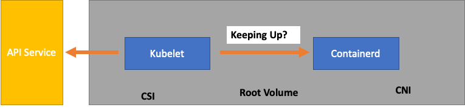
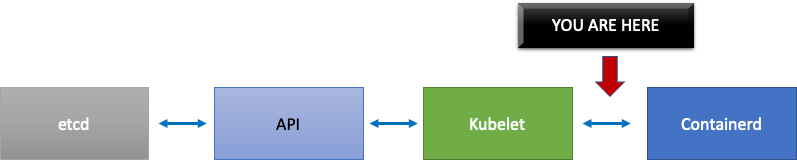
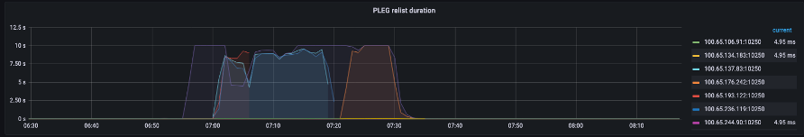
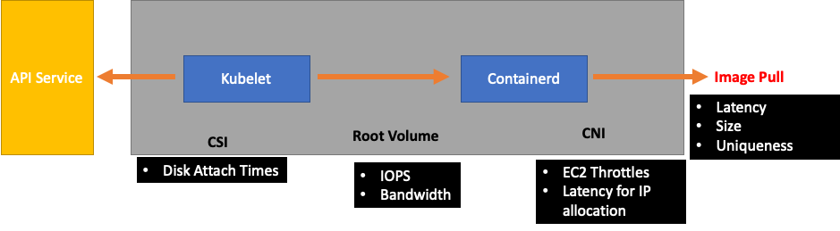

We've Moved to the AWS Docs! 🚀
This content has been updated and relocated to improve your experience. Please visit our new site for the latest version: AWS EKS Best Practices Guide on the AWS Docs
Bookmarks and links will continue to work, but we recommend updating them for faster access in the future.
date: 2023-09-22 authors: - Shane Corbett
Kubernetes Scaling Theory¶
Nodes vs. Churn Rate¶
Often when we discuss the scalability of Kubernetes, we do so in terms of how many nodes there are in a single cluster. Interestingly, this is seldom the most useful metric for understanding scalability. For example, a 5,000 node cluster with a large but fixed number of pods would not put a great deal of stress on the control plane after the initial setup. However, if we took a 1,000 node cluster and tried creating 10,000 short lived jobs in less than a minute, it would put a great deal of sustained pressure on the control plane.
Simply using the number of nodes to understand scaling can be misleading. It's better to think in terms of the rate of change that occurs within a specific period of time (let's use a 5 minute interval for this discussion, as this is what Prometheus queries typically use by default). Let's explore why framing the problem in terms of the rate of change can give us a better idea of what to tune to achieve our desired scale.
Thinking in Queries Per Second¶
Kubernetes has a number of protection mechanisms for each component - the Kubelet, Scheduler, Kube Controller Manager, and API server - to prevent overwhelming the next link in the Kubernetes chain. For example, the Kubelet has a flag to throttle calls to the API server at a certain rate. These protection mechanisms are generally, but not always, expressed in terms of queries allowed on a per second basis or QPS.
Great care must be taken when changing these QPS settings. Removing one bottleneck, such as the queries per second on a Kubelet will have an impact on other down stream components. This can and will overwhelm the system above a certain rate, so understanding and monitoring each part of the service chain is key to successfully scaling workloads on Kubernetes.
Note
The API server has a more complex system with introduction of API Priority and Fairness which we will discuss separately.
Note
Caution, some metrics seem like the right fit but are in fact measuring something else. As an example, kubelet_http_inflight_requests relates to just the metrics server in Kubelet, not the number of requests from Kubelet to apiserver requests. This could cause us to misconfigure the QPS flag on the Kubelet. A query on audit logs for a particular Kubelet would be a more reliable way to check metrics.
Scaling Distributed Components¶
Since EKS is a managed service, let's split the Kubernetes components into two categories: AWS managed components which include etcd, Kube Controller Manager, and the Scheduler (on the left part of diagram), and customer configurable components such as the Kubelet, Container Runtime, and the various operators that call AWS APIs such as the Networking and Storage drivers (on the right part of diagram). We leave the API server in the middle even though it is AWS managed, as the settings for API Priority and Fairness can be configured by customers.

Upstream and Downstream Bottlenecks¶
As we monitor each service, it's important to look at metrics in both directions to look for bottlenecks. Let's learn how to do this by using Kubelet as an example. Kubelet talks both to the API server and the container runtime; how and what do we need to monitor to detect whether either component is experiencing an issue?
How many Pods per Node¶
When we look at scaling numbers, such as how many pods can run on a node, we could take the 110 pods per node that upstream supports at face value.
Note
https://kubernetes.io/docs/setup/best-practices/cluster-large/
However, your workload is likely more complex than what was tested in a scalability test in Upstream. To ensure we can service the number of pods we want to run in production, let's make sure that the Kubelet is “keeping up” with the Containerd runtime.

To oversimplify, the Kubelet is getting the status of the pods from the container runtime (in our case Containerd). What if we had too many pods changing status too quickly? If the rate of change is too high, requests [to the container runtime] can timeout.
Note
Kubernetes is constantly evolving, this subsystem is currently undergoing changes. https://github.com/kubernetes/enhancements/issues/3386
 
In the graph above, we see a flat line indicating we have just hit the timeout value for the pod lifecycle event generation duration metric. If you would like to see this in your own cluster you could use the following PromQL syntax.
If we witness this timeout behavior, we know we pushed the node over the limit it was capable of. We need to fix the cause of the timeout before proceeding further. This could be achieved by reducing the number of pods per node, or looking for errors that might be causing a high volume of retries (thus effecting the churn rate). The important take-away is that metrics are the best way to understand if a node is able to handle the churn rate of the pods assigned vs. using a fixed number.
Scale by Metrics¶
While the concept of using metrics to optimize systems is an old one, it's often overlooked as people begin their Kubernetes journey. Instead of focusing on specific numbers (i.e. 110 pods per node), we focus our efforts on finding the metrics that help us find bottlenecks in our system. Understanding the right thresholds for these metrics can give us a high degree of confidence our system is optimally configured.
The Impact of Changes¶
A common pattern that could get us into trouble is focusing on the first metric or log error that looks suspect. When we saw that the Kubelet was timing out earlier, we could try random things, such as increasing the per second rate that the Kubelet is allowed to send, etc. However, it is wise to look at the whole picture of everything downstream of the error we find first. Make each change with purpose and backed by data.
Downstream of the Kubelet would be the Containerd runtime (pod errors), DaemonSets such as the storage driver (CSI) and the network driver (CNI) that talk to the EC2 API, etc.

Let's continue our earlier example of the Kubelet not keeping up with the runtime. There are a number of points where we could bin pack a node so densely that it triggers errors.

When designing the right node size for our workloads these are easy-to-overlook signals that might be putting unnecessary pressure on the system thus limiting both our scale and performance.
The Cost of Unnecessary Errors¶
Kubernetes controllers excel at retrying when error conditions arise, however this comes at a cost. These retries can increase the pressure on components such as the Kube Controller Manager. It is an important tenant of scale testing to monitor for such errors.
When fewer errors are occurring, it is easier spot issues in the system. By periodically ensuring that our clusters are error free before major operations (such as upgrades) we can simplify troubleshooting logs when unforeseen events happen.
Expanding Our View¶
In large scale clusters with 1,000's of nodes we don't want to look for bottlenecks individually. In PromQL we can find the highest values in a data set using a function called topk; K being a variable we place the number of items we want. Here we use three nodes to get an idea whether all of the Kubelets in the cluster are saturated. We have been looking at latency up to this point, now let's see if the Kubelet is discarding events.
Breaking this statement down.
- We use the Grafana variable
$__rate_intervalto ensure it gets the four samples it needs. This bypasses a complex topic in monitoring with a simple variable. topkgive us just the top results and the number 3 limits those results to three. This is a useful function for cluster wide metrics.{}tell us there are no filters, normally you would put the job name of whatever the scraping rule, however since these names vary we will leave it blank.
Splitting the Problem in Half¶
To address a bottleneck in the system, we will take the approach of finding a metric that shows us there is a problem upstream or downstream as this allows us to split the problem in half. It will also be a core tenet of how we display our metrics data.
A good place to start with this process is the API server, as it allow us to see if there's a problem with a client application or the Control Plane.